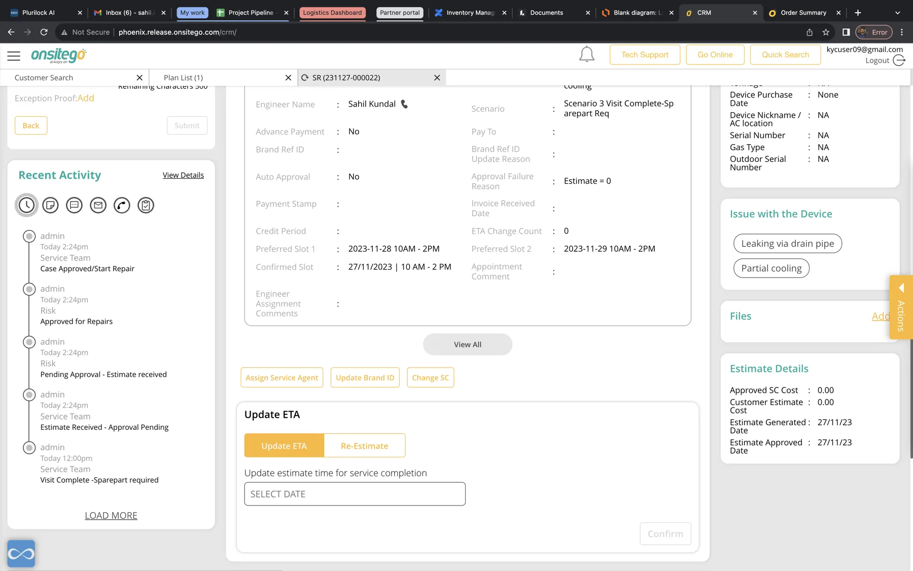
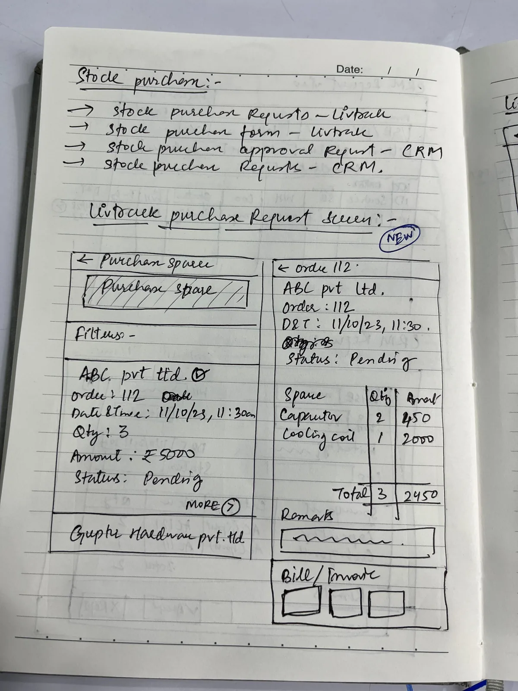
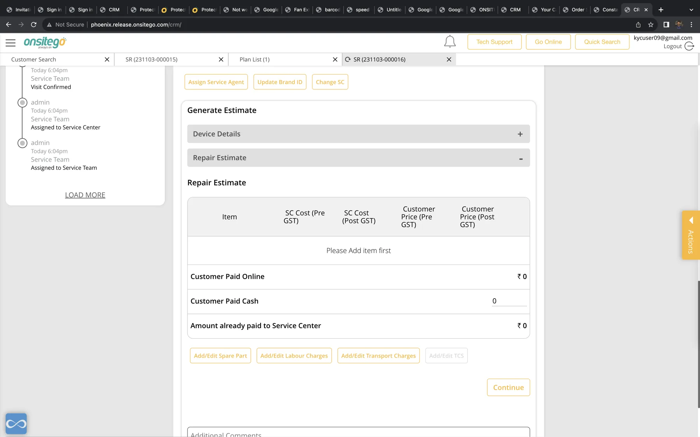
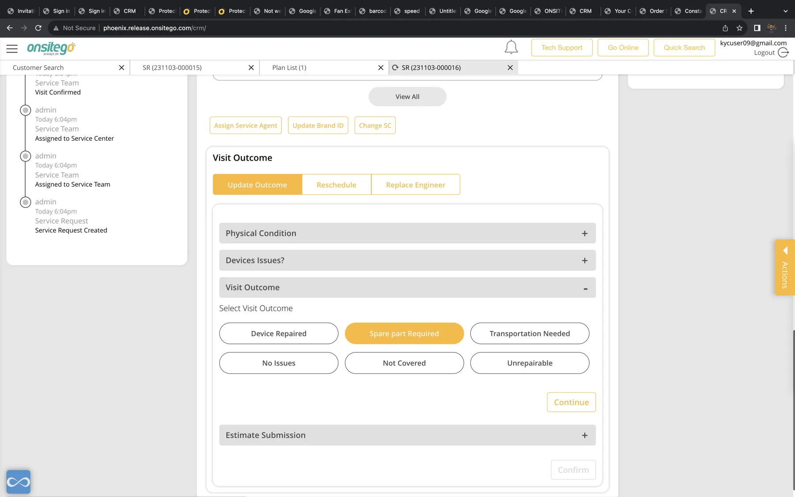

Inventory Management for Service Operations
Connecting spare-part availability, repair estimates and visit outcomes so inventory follows the service job instead of living in a separate operational silo.

Because of company policy and NDA constraints, some end-to-end screens and analytics cannot be shown. The case study focuses on the problem, research, design decisions, and selected interface glimpses.
Context: inventory is not a warehouse problem when it blocks a repair
The Inventory management project combines hand-drawn flows with detailed Onsitego service screens containing repair estimates, visit outcomes, service-center assignment and ticket history. That makes inventory part of a broader repair workflow: spare parts, estimates and service outcomes have to stay synchronized with the customer’s job.

The failure mode: parts data and repair decisions drift apart
Wrong part, right ticket
A technician can know what the customer needs while the system still lacks a reliable part mapping.
Stock is visible too late
Availability discovered after a visit causes another appointment, another call and another SLA risk.
Estimate ≠ inventory
Repair cost, part approval and stock reservation can become three disconnected decisions.
The product should treat a spare part as a stateful object in the repair journey—not as a SKU living in a separate inventory module.
Decision 1 — connect diagnosis, estimate and stock in one decision surface

When an operator selects a diagnosis or repair outcome, the system should immediately surface the compatible part, its location, available quantity, expected replenishment and whether customer approval is required. This prevents the common “approve now, discover stock later” loop.
Decision 2 — model inventory around states that operations can act on
Stock count alone is not enough. The interface needs to distinguish available, reserved, in-transit, consumed, defective and return-pending. Those states are what stop double allocation and make reconciliation possible.
Decision 3 — make visit outcome the bridge between service and inventory

The visit-outcome screen is the natural moment to update inventory automatically. If a part was used, the job should consume the reservation; if diagnosis changed, the reservation should be released; if a replacement is pending, the next action should be created without requiring a second system.
One user action, multiple synchronized records
Submitting a service outcome should update the ticket, part state and follow-up task together. This removes reconciliation work from the operator and reduces “system says one thing, reality says another” failures.
Illustrative impact
Illustrative case-study metrics, not analytics contained in the project materials.
Reflection
The strongest design insight is that enterprise modules should follow the business event, not the org chart. A customer repair can cross operations, inventory, finance and field service, but the user should experience one continuous job.